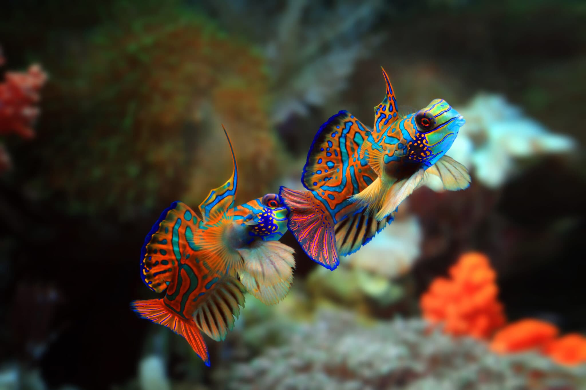

Os Tangs azuis são identificados por sua coloração azul brilhante, corpos ovais e caudas amarelas em forma de bandeira.
Suas barbatanas peitorais também são amarelas. Os adultos têm uma linha estreita de azul escuro ao longo de sua barbatana dorsal, que se curva na cauda.
Tang Amarelo
Este peixe tem origem dos oceanos Índicos e Pacífico. Seu nome científico é Zebrasoma Flavescens e suas principais características são:
le costuma viver em grupos e tem um formato de corpo arredondado e totalmente tomado pela cor amarela, ele é bem fininho e possui uma boquinha que faz uma espécie de biquinho.
Peixe Palhaço
Ao pensar em um aquário marinho, um dos principais nomes de peixes que vêm à mente é o do peixe-palhaço por causa do filme Procurando Nemo.
O peixe-palhaço é um dos peixes marinhos pequenos, portanto, pode se desenvolver em aquários menores, de até 100 ml, com temperatura entre 21ºC e 28ºC.
Royal Gramma
O peixe Royal Gramma, da espécie Gramma loreto, é um peixe muito conhecido por colecionadores de peixes de aquário. Ele começa com cor de uva que vai 'clareando' e termina em amarelo.

Gobies
Existem mais de 2.000 espécies de gobies e são ideais para iniciantes, pois são pequenos, medindo cerca de 10 centímetros e podemos encontrá-los
de formas e cores diferentes. Vivem em comunidades pequenas.